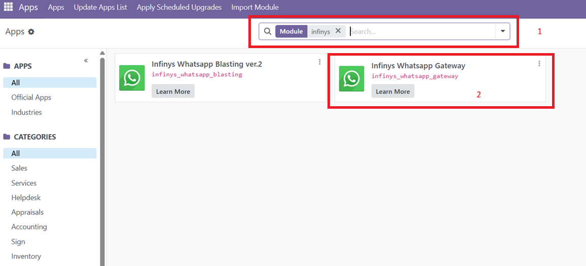
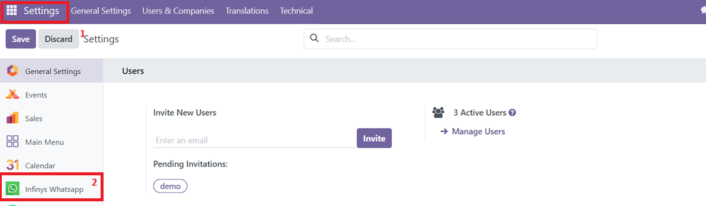
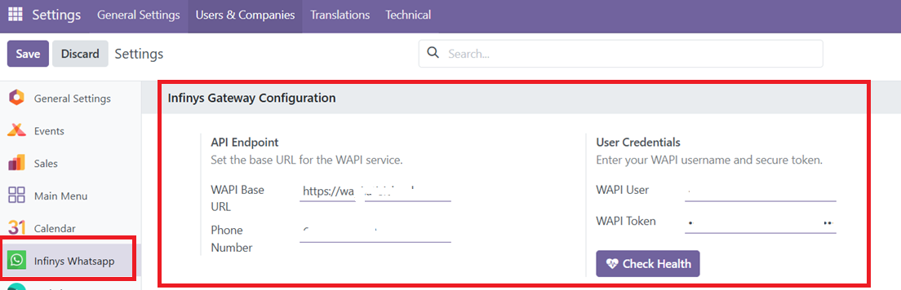
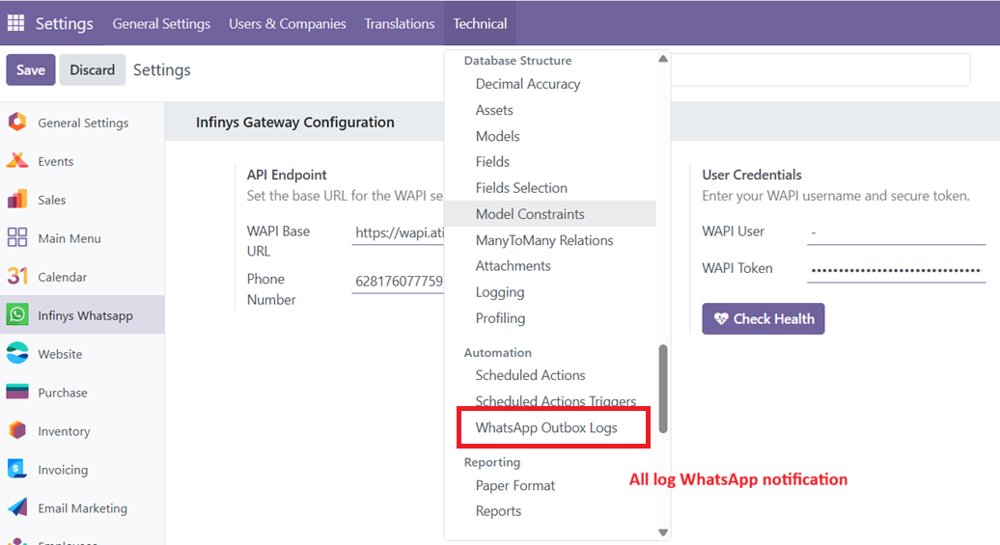
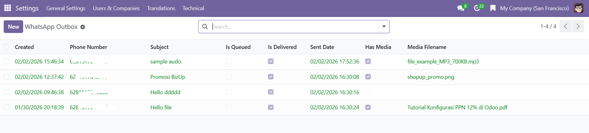
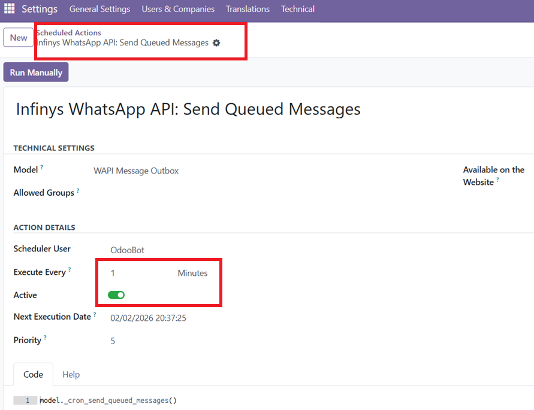
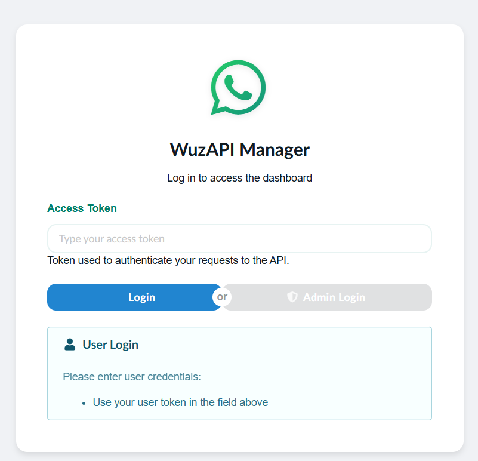
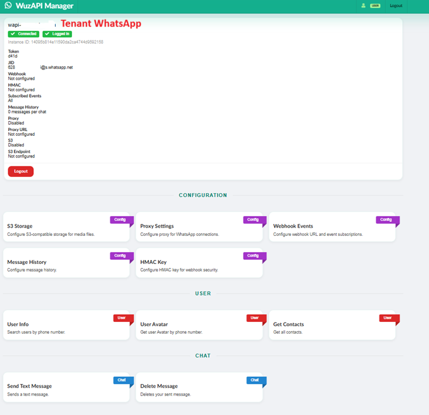

Infinyts WhatsApp Gateway is a simple solution for sending automated WhatsApp notifications for Odoo. It is designed for one-way message delivery only, ideal for reminders, alerts, and important system notifications without chat or reply features.
Contact the Infinys Odoo Team to obtain a WhatsApp API tenant and integrate it into the Infinys WhatsApp Gateway for Odoo.
For other WhatsApp-related more further, you can use WhatsApp Blasting by Infinys System Indonesia.
How to Install Infinys WhatsApp Gateway on Odoo :

Before using the application, you need to setup the WhatsApp API tenant first, you can contact the Infinys Odoo Team to obtain a WhatsApp API tenant. Once set up, and click button test credential for make sure all configuration are properly done. Then able to start use the application.


A WhatsApp Gateway Log is a record of all outgoing WhatsApp messages that have been sent through the Infinys WhatsApp Gateway. Only Administrator role will have access to this log. Goto Setting > Technical > Whatsapp Outbox Log.


Scheduled Actions in the Infinys WhatsApp Gateway allow WhatsApp notifications to be sent automatically at defined intervals using Odoo’s cron mechanism. This feature is used to process pending messages, send reminders, alerts, or system notifications, and ensure messages are delivered reliably without manual intervention.

Infinys WhatsApp API Multitenant is a scalable solution that allows multiple clients or business units to use WhatsApp messaging through a single platform, with isolated tenants, secure API access, and centralized management for efficient integration with Odoo and other systems. This solution ensures that each tenant has their own isolated configuration, with their own set of WhatsApp API credentials, phone numbers, and message templates. This allows for easy management and customization of the messaging experience for each client or business unit. Integrate with existing your whatsapp number, just scan the barcode to link your whatsapp number with the tenant and start use the application.


Infinyscloud is a trusted leader in Indonesia's cloud computing
industry, delivering secure, scalable, and reliable cloud solutions
that help businesses grow and stay competitive. With comprehensive
services covering cloud consulting, strategy, migration, and
optimization, we guide businesses through every step of their cloud
journey making adoption smooth and effective.
Our commitment to innovation and quality is reflected in our ISO
certifications and strong partnerships with global platforms like AWS
and Odoo. Known for our responsive customer service and deep expertise
in cloud technologies, Infinyscloud is here to support your business
with solutions you can depend on.
Infinys System Indonesia is an Odoo Partner, a company that has been
officially recognized by Odoo to sell, implement, consult, and provide
technical support related to the use of Odoo. Odoo has a strict
partnership system to ensure that its partners are able to provide
high-quality services in accordance with Odoo's global standards.
These partners also have access to exclusive resources, training, and
support from Odoo to ensure the success of implementations in every
project. Since we also operate in the field of cloud computing, we
also provide Odoo Cloud Hosting services.
Our ERP Products : ShopUp, BizUp, TixUp, IntegraERP, IntegraConnect, and many more
Try the Module :
Website: https://kelontongan-demo.isi.id/
User: odoo-trial@isi.co.id
Password: odoo-trial